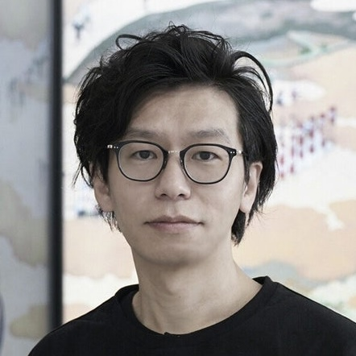

Scott Allen 桑島直暖 本田光 安本華 駒井透也 佐々木輝 綱井晴 tkmt
本展を企画するLatent Media Labでは、メディアテクノロジーの仕組みや歴史的な変遷に着目し、それらを多角的・批評的に捉えることで、本来多様であり得た潜在的な別の表現を探求する。
展示会場である『京都場』が京染の工房として使われていた背景から、織られた布を観念が固定された既存のメディアやその枠組みとして捉え、それを一度ほどき、再構築・再解釈することで新たな価値をリメイクするという思いからタイトルを「unweaved」とした。
本展では各メンバーで異なるメディアや表現分野を担当し、一から紡ぎ直し新たな布を織り成す。
私たちの紡いだ糸が交わり、縦横に重なり合ったその布はどんな色を帯び、どんな質感を持つのか。
それは、この場で生まれる発見と対話に委ねられている。
トークイベント
2025 9.20 (13:00~14:00)
重田佑介 / Scott Allen / 本田光
アクセス
京都場 / KYOTOBA
〒604-8412
京都府京都市中京区西ノ京南聖町6-5
ゲスト：重田佑介
神奈川県在住。
メディアアーティスト / ピクセルアニメーションアーティスト。
日本大学芸術学部美術学科コミュニケーションデザインコース卒業後、映像制作会社を経て、東京芸術大学大学院映像研究科メディア映像領域修了。驚き盤やゾートロープなど装置を含めた広義なアニメーションへの興味からメディアアート領域で活動。複数のプロジェクターやモニタを使って、空間的にアニメーションを展開した体験型の映像作品を手掛けている。主な展覧会に「オープン・スペース2011」(ICC / 2011)、「キラキラ、ざわざわ、ハラハラ展」(横須賀美術館 / 2014)、個展「しかくいきしき」(ふなばしアンデルセン子ども美術館/2022) など